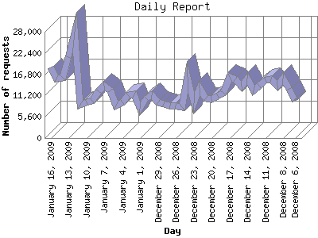

The Daily Report identifies the activity for each day within the reporting period. Remember that one page hit can result in several server requests as the images for each page are loaded.

| Day | Number of requests | Number of page requests | |
|---|---|---|---|
| 1. | December 6, 2008 | 9,868 | 103 |
| 2. | December 7, 2008 | 13,039 | 129 |
| 3. | December 8, 2008 | 15,698 | 138 |
| 4. | December 9, 2008 | 13,835 | 140 |
| 5. | December 10, 2008 | 15,473 | 106 |
| 6. | December 11, 2008 | 15,278 | 131 |
| 7. | December 12, 2008 | 13,814 | 114 |
| 8. | December 13, 2008 | 12,590 | 115 |
| 9. | December 14, 2008 | 15,648 | 148 |
| 10. | December 15, 2008 | 13,488 | 121 |
| 11. | December 16, 2008 | 15,507 | 129 |
| 12. | December 17, 2008 | 16,131 | 142 |
| 13. | December 18, 2008 | 11,825 | 90 |
| 14. | December 19, 2008 | 11,040 | 91 |
| 15. | December 20, 2008 | 10,167 | 85 |
| 16. | December 21, 2008 | 10,425 | 111 |
| 17. | December 22, 2008 | 13,062 | 123 |
| 18. | December 23, 2008 | 9,192 | 75 |
| 19. | December 24, 2008 | 16,076 | 126 |
| 20. | December 25, 2008 | 8,189 | 69 |
| 21. | December 26, 2008 | 8,559 | 77 |
| 22. | December 27, 2008 | 8,478 | 70 |
| 23. | December 28, 2008 | 8,886 | 97 |
| 24. | December 29, 2008 | 9,304 | 90 |
| 25. | December 30, 2008 | 11,308 | 112 |
| 26. | December 31, 2008 | 10,352 | 115 |
| 27. | January 1, 2009 | 7,669 | 70 |
| 28. | January 2, 2009 | 11,589 | 127 |
| 29. | January 3, 2009 | 11,207 | 114 |
| 30. | January 4, 2009 | 9,485 | 89 |
| 31. | January 5, 2009 | 8,639 | 86 |
| 32. | January 6, 2009 | 12,461 | 111 |
| 33. | January 7, 2009 | 13,749 | 114 |
| 34. | January 8, 2009 | 12,273 | 106 |
| 35. | January 9, 2009 | 9,888 | 74 |
| 36. | January 10, 2009 | 9,331 | 93 |
| 37. | January 11, 2009 | 8,829 | 74 |
| 38. | January 12, 2009 | 27,951 | 115 |
| 39. | January 13, 2009 | 21,305 | 128 |
| 40. | January 14, 2009 | 15,843 | 108 |
| 41. | January 15, 2009 | 15,615 | 109 |
| 42. | January 16, 2009 | 18,683 | 153 |
Most active day March 28, 2008 : 402 pages sent. 27,951 requests handled.
Daily average: 107 pages sent. 12,660 requests handled.
This report was generated on January 17, 2009 11:54.
Report time frame January 3, 2008 00:50 to January 16, 2009 23:34.
| Web statistics report produced by: analog 6.0 / Report Magic 2.21 |